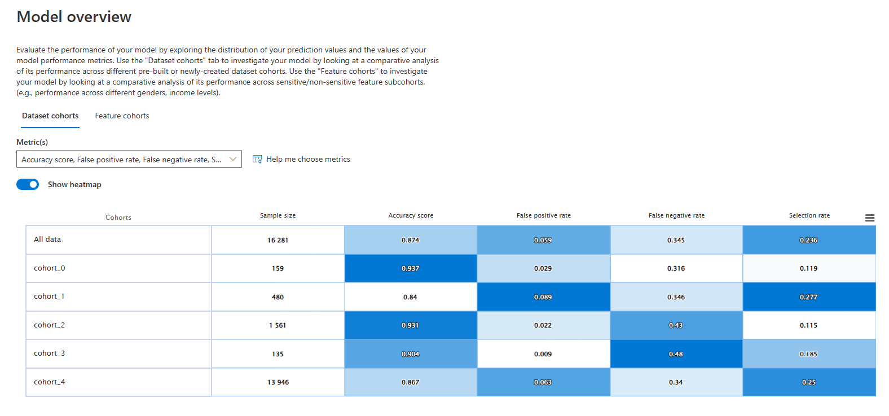

Moving Cohorts from raimitigations to raiwidgets (and vice versa)
raiwidgets is a library that offers several visualization tools for evaluating models, and among these tools, it offer ways to compare the results between different cohorts. The raiwidgets library has their own way of defining a cohort, but raiwidgets and raimitigations both use the same standard for saving the definitions of a cohort into a JSON file. This makes it easier for users to go back and forth these two libraries
when working with cohorts. The adoption of a unified JSON interface supports the following scenarios:
A user starts by doing some analysis and applying mitigations using the
raimitigationslibrary over different cohorts (using the CohortManager class). They then save their cohorts using theCohortManager.save_cohorts()method, which will create a JSON file for each of the existing cohorts. Finally, the user can use those JSON files to recreate those cohorts in theraiwidgetslibrary and continue with their analysis using that library;A user starts by creating a set of cohorts in the
raiwidgetslibrary, where they perform some analysis. They then save those cohorts into a set of JSON files, which are then loaded using theCohortManagerclass. From here, users can apply a set of mitigations over each cohort.
This notebook aims to demonstrate how to achieve these two scenarios. For this, we’ll be using the Adult Census Dataset. First of all, make sure that raiwidgets is installed:
> pip install raiwidgets
[1]:
import sys
sys.path.append('../../../notebooks')
import random
import numpy as np
import pandas as pd
from sklearn.pipeline import Pipeline
from lightgbm import LGBMClassifier
from raimitigations.utils import split_data
import raimitigations.dataprocessing as dp
from raimitigations.cohort import (
CohortManager,
fetch_cohort_results
)
from download import download_datasets
SEED = 46
#SEED = None
np.random.seed(SEED)
random.seed(SEED)
data_dir = "../../../datasets/census/"
download_datasets(data_dir)
label_col = "income"
df_train = pd.read_csv(data_dir + "train.csv")
df_test = pd.read_csv(data_dir + "test.csv")
# convert to 0 and 1 encoding
df_train[label_col] = df_train[label_col].apply(lambda x: 0 if x == "<=50K" else 1)
df_test[label_col] = df_test[label_col].apply(lambda x: 0 if x == "<=50K" else 1)
X_train = df_train.drop(columns=[label_col])
y_train = df_train[label_col]
X_test = df_test.drop(columns=[label_col])
y_test = df_test[label_col]
[2]:
df_train
[2]:
| income | age | workclass | fnlwgt | education | education-num | marital-status | occupation | relationship | race | gender | capital-gain | capital-loss | hours-per-week | native-country | |
|---|---|---|---|---|---|---|---|---|---|---|---|---|---|---|---|
| 0 | 0 | 39 | State-gov | 77516 | Bachelors | 13 | Never-married | Adm-clerical | Not-in-family | White | Male | 2174 | 0 | 40 | United-States |
| 1 | 0 | 50 | Self-emp-not-inc | 83311 | Bachelors | 13 | Married-civ-spouse | Exec-managerial | Husband | White | Male | 0 | 0 | 13 | United-States |
| 2 | 0 | 38 | Private | 215646 | HS-grad | 9 | Divorced | Handlers-cleaners | Not-in-family | White | Male | 0 | 0 | 40 | United-States |
| 3 | 0 | 53 | Private | 234721 | 11th | 7 | Married-civ-spouse | Handlers-cleaners | Husband | Black | Male | 0 | 0 | 40 | United-States |
| 4 | 0 | 28 | Private | 338409 | Bachelors | 13 | Married-civ-spouse | Prof-specialty | Wife | Black | Female | 0 | 0 | 40 | Cuba |
| ... | ... | ... | ... | ... | ... | ... | ... | ... | ... | ... | ... | ... | ... | ... | ... |
| 32556 | 0 | 27 | Private | 257302 | Assoc-acdm | 12 | Married-civ-spouse | Tech-support | Wife | White | Female | 0 | 0 | 38 | United-States |
| 32557 | 1 | 40 | Private | 154374 | HS-grad | 9 | Married-civ-spouse | Machine-op-inspct | Husband | White | Male | 0 | 0 | 40 | United-States |
| 32558 | 0 | 58 | Private | 151910 | HS-grad | 9 | Widowed | Adm-clerical | Unmarried | White | Female | 0 | 0 | 40 | United-States |
| 32559 | 0 | 22 | Private | 201490 | HS-grad | 9 | Never-married | Adm-clerical | Own-child | White | Male | 0 | 0 | 20 | United-States |
| 32560 | 1 | 52 | Self-emp-inc | 287927 | HS-grad | 9 | Married-civ-spouse | Exec-managerial | Wife | White | Female | 15024 | 0 | 40 | United-States |
32561 rows × 15 columns
[3]:
def get_model():
model = LGBMClassifier(random_state=SEED)
return model
Next, we create a simple pipeline that will be used in the raiwidgets library.
[4]:
pipe = Pipeline([
("scaler", dp.DataStandardScaler(verbose=False)),
("encoder", dp.EncoderOHE(verbose=False)),
("estimator", get_model()),
])
model = pipe.fit(X_train, y_train)
/home/mmendonca/anaconda3/envs/raipub/lib/python3.9/site-packages/sklearn/preprocessing/_encoders.py:808: FutureWarning: `sparse` was renamed to `sparse_output` in version 1.2 and will be removed in 1.4. `sparse_output` is ignored unless you leave `sparse` to its default value.
warnings.warn(
Scenario 1: Saving a set of cohorts using raimitigations and loading it in raiwidgets
We’ll start by creating a CohortManager object just to create the definitions of our cohorts. But note that users can also create custom pipelines for each cohort here, and whatever other mitigations. But for the sake of the demonstration, we’ll only focus on how to create the cohort definition files and transfer them to raiwidgets.
In the following cell, we simply create a CohortManager object (without any pipelines), call the fit method in order to create the queries for each cohort (remember that when using the cohort_col parameter, the cohort definitions is only created after calling the fit() method - check the CohortManager tutorial notebook for more information), and then save the cohorts using the save_cohorts() method.
[7]:
cht_manager = CohortManager(cohort_col=["race"])
cht_manager.fit(X_train, y_train)
json_files = [f"json_files/exp_1/cht_{i}.json" for i in range(len(cht_manager.get_queries()))]
cht_manager.save_cohorts(json_files)
We’ll now create the raiwdgets’ RAIInsights object in order to create the visualization of the model’s performance over each cohort.
[8]:
from raiwidgets import ResponsibleAIDashboard
from responsibleai import RAIInsights
from raiwidgets.cohort import Cohort, CohortFilter, CohortFilterMethods
rai_insights = RAIInsights(
model,
df_train,
df_test,
label_col,
'classification',
categorical_features=pipe['encoder'].get_encoded_columns(),
maximum_rows_for_test=20000
)
# Error Analysis
rai_insights.error_analysis.add()
rai_insights.compute()
Using categorical_feature in Dataset.
Passing a set as an indexer is deprecated and will raise in a future version. Use a list instead.
Passing a set as an indexer is deprecated and will raise in a future version. Use a list instead.
Passing a set as an indexer is deprecated and will raise in a future version. Use a list instead.
Passing a set as an indexer is deprecated and will raise in a future version. Use a list instead.
Passing a set as an indexer is deprecated and will raise in a future version. Use a list instead.
Passing a set as an indexer is deprecated and will raise in a future version. Use a list instead.
Passing a set as an indexer is deprecated and will raise in a future version. Use a list instead.
Passing a set as an indexer is deprecated and will raise in a future version. Use a list instead.
Passing a set as an indexer is deprecated and will raise in a future version. Use a list instead.
Passing a set as an indexer is deprecated and will raise in a future version. Use a list instead.
Passing a set as an indexer is deprecated and will raise in a future version. Use a list instead.
Passing a set as an indexer is deprecated and will raise in a future version. Use a list instead.
Passing a set as an indexer is deprecated and will raise in a future version. Use a list instead.
Passing a set as an indexer is deprecated and will raise in a future version. Use a list instead.
Passing a set as an indexer is deprecated and will raise in a future version. Use a list instead.
The next step is to read the cohort files saved using raimitigations and create a set of cohorts (using raiwidgets’ Cohort class) using the definition contained in those files.
[7]:
import json
cohort_list = []
for file_name in json_files:
with open(file_name, "r") as file:
cht_json = json.load(file)
serialized_json = json.dumps(cht_json)
cohort_list.append(Cohort.from_json(serialized_json))
Finally, we start the visualization server using raiwidgets, where we provide the list of cohorts that were loaded from the JSON files.
[8]:
ResponsibleAIDashboard(rai_insights, cohort_list=cohort_list)
ResponsibleAI started at http://localhost:5000
[8]:
<raiwidgets.responsibleai_dashboard.ResponsibleAIDashboard at 0x7f9a8cf63ca0>
Once we open the server (specified by the link shown in the previous cell), we can check that our cohorts are all there, as we wanted.

Scenario 2: Saving a set of cohorts using raiwidgets and loading them in raimitigations
We’ll now show how to do the other way around: create a set of cohorts using raiwidgets and then moving those cohorts to raimitigations. First, we’ll need to create the cohorts using CohortFilter and Cohort classes from raiwidgets and then save those cohorts to a JSON file.
[9]:
cohort_filter_age = CohortFilter(
method=CohortFilterMethods.METHOD_LESS,
arg=[65],
column='age')
cohort_filter_hours_per_week = CohortFilter(
method=CohortFilterMethods.METHOD_GREATER,
arg=[40],
column='hours-per-week')
cht1 = Cohort(name='Cohort Age and Hours-Per-Week')
cht1.add_cohort_filter(cohort_filter_age)
cht1.add_cohort_filter(cohort_filter_hours_per_week)
with open("json_files/exp_2/cht_1.json", "w") as file:
file.write(cht1.to_json())
Afterwards, we simply load those cohort files using the cohort_json_files from the CohortManager class. Note that the cohorts created in the previous cell does not cover all instances in our dataset. Therefore, we’ll add a None value in the list of JSON files passed to the CohortManager to inform that we want to create an extra cohort that contains all instances that doesn’t belong to any of the other cohorts created. Note that when we print the queries, we have two cohorts: the
one saved in the JSON file, and the other that contains all the remaining instances. Also, note that the query for the “Remaining Instances” cohort is created automatically by the CohortManager.
[10]:
json_files = ["json_files/exp_2/cht_1.json", None]
cht_manager = CohortManager(cohort_json_files=json_files)
cht_manager.fit(X_train, y_train)
cht_manager.get_queries()
[10]:
{'Cohort Age and Hours-Per-Week': '(`age` < 65) and (`hours-per-week` > 40)',
'Remaining Instances': '(((`age` >= 65) or (`age`.isnull())) or ((`hours-per-week` <= 40) or (`hours-per-week`.isnull())))'}